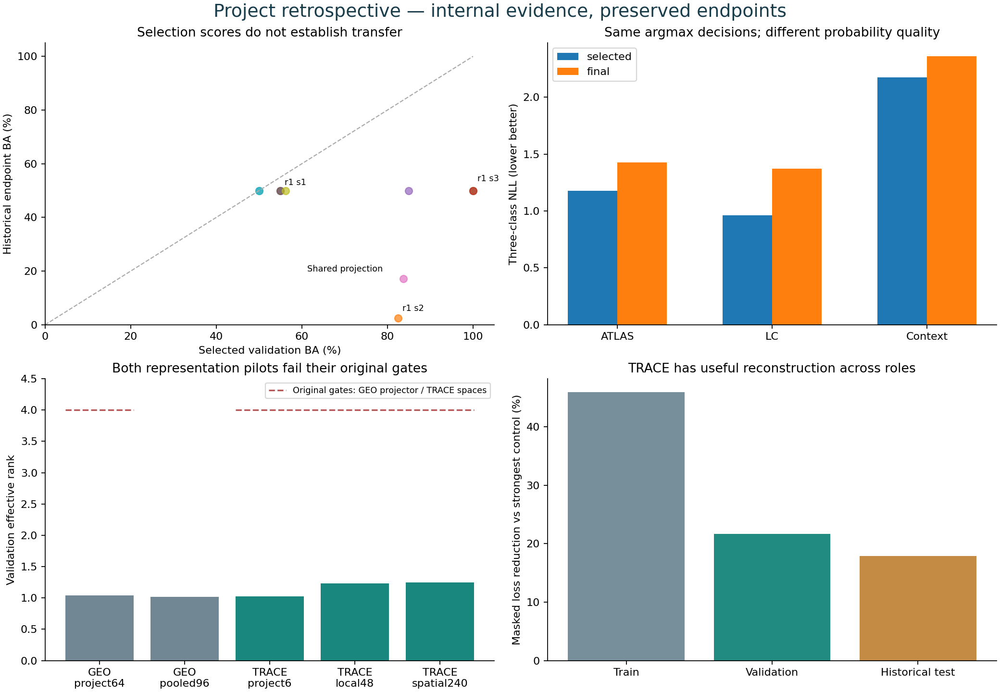

RESEARCH RECORD · 2 NOVEMBER 2026
What the tyre project has taught us
Useful geometry and texture reconstruction. Mileage-classifier transfer remains unresolved. Every original model selection is preserved.
570existing photos7Phase3 fit families10measured fit executions600measured Phase3 epochs
Full project analysis · New TRACE component review
Follow each model family
The counts exclude disposable engineering updates. NB13A resumed NB13; NB24 ran the NB22 stage. These are connected studies using the same photographs.
TRACE: where reconstruction improves
Final epoch60, clean view0, original hidden-tile plan. Bars show reduction in mean masked loss against the visible-band control, on the same common support.
Components preserve conservative source relationships. These are descriptive improvements on previously inspected data, not independent new-tyre or physical-wear validation.
Inspect the 570 image records
Every image improves against all three masked controls for the recorded plan. Some test images improve by less than5%. None of this changes TRACE's failed overall diversity gate or selected=None.
| Source image | Role | Masked loss | Minimum control gain | Local gain |
|---|
Minimum control gain is min(1−model/control) over channel mean, position mean and visible-band mean for that image. It differs from the aggregate visible-band bars. No confidence intervals treat these correlated photos as independent subjects.
Full image CSV · Component CSV · Exact input hashes
Cross-project findings

Different protocols and representation dimensions are labeled separately. This is not a matched architecture ranking. The full Markdown report records each source and limitation.
Evidence boundary
New analysis is local and has not been uploaded to HF. Original experiments retain their previously verified pinned HF evidence. This review performed no fitting, model forwards, new photo acquisition or workstation changes.
Files and metric dictionary